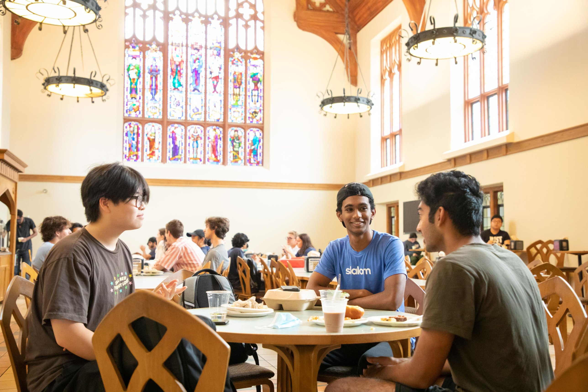
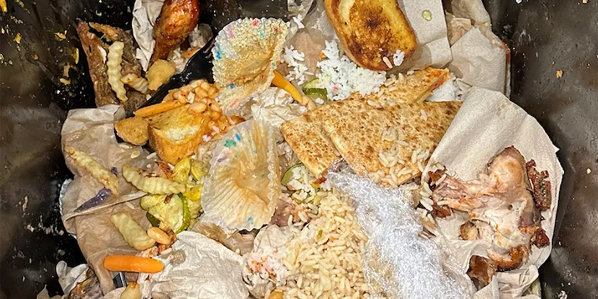
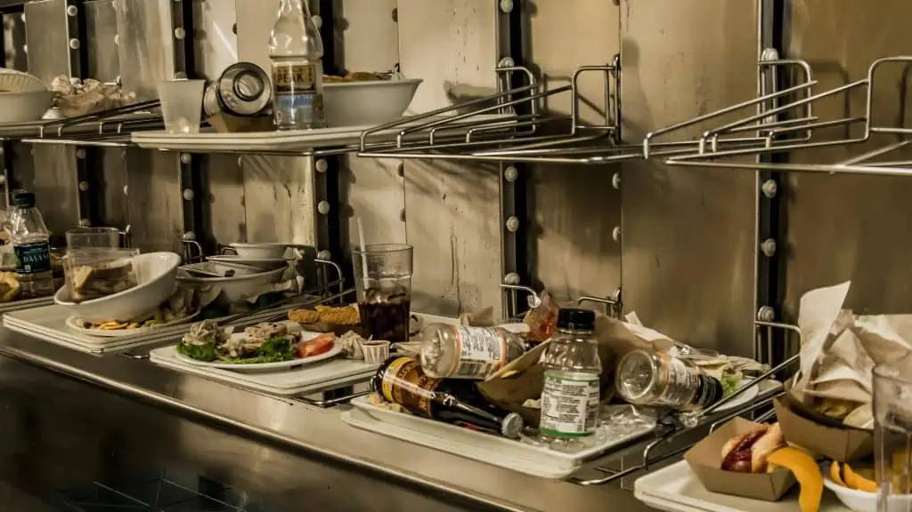
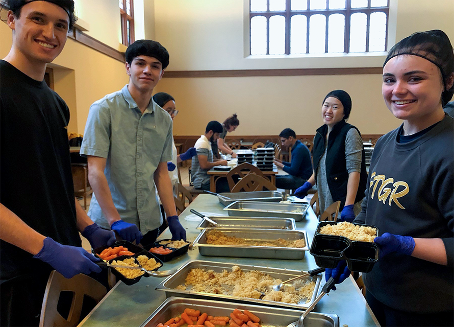
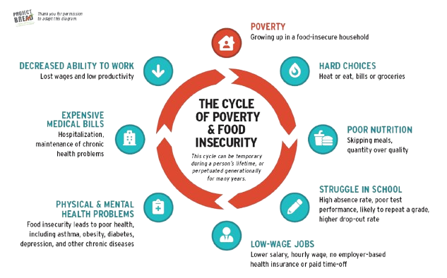
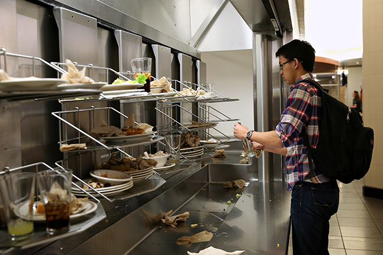

STUDENTS
Stretching a food budget?
HOVER TO READ
Any Georgia Tech student who sometimes struggles to afford meals. A free meal from a campus event is often a short walk away.
How to get meal alertsHave you ever thrown away food after an event?
Do you ever worry about where your next lunch or dinner is coming from?
What if one solution could address both problems?
Food insecurity means not having reliable access to enough affordable, nutritious food. In 2020, it affected about 23% of U.S. college students, roughly 3.8 million people. At the same time, catered events at Georgia Tech often end with leftover food going in the trash. Green Forks addresses both problems by connecting that surplus food with the students who need it.
U.S. college students faced food insecurity in 2020
of edible food wasted per student each year in campus dining


Catered events across campus often end with food that could still feed students.
This site shows both groups that the problem is real, that the fix already works on campus, and the one action that helps most.

Any Georgia Tech student who sometimes struggles to afford meals. A free meal from a campus event is often a short walk away.
How to get meal alerts
Faculty, staff, and student leaders who plan seminars, club meetings, and receptions. A two-minute form decides whether leftovers feed people or fill a bin.
How to share leftoversThe Sustainable Development Goals (SDGs) are 17 goals adopted by all United Nations member states in 2015 as a shared plan for a more sustainable future by 2030. Goal 2, Zero Hunger, aims to make sure everyone, especially people in vulnerable situations, has access to safe, nutritious, and sufficient food all year round. Hunger is often seen as a global issue, but it is also present on college campuses, including Georgia Tech.
The U.S. Department of Agriculture defines food insecurity as a lack of consistent access to enough food for an active, healthy life. Within that group, about 2.2 million students experienced very low food security, meaning they repeatedly reduced or skipped meals because they could not afford them.
Pick a group. Red seats are students who have faced food insecurity.
When the data is broken down by group, the differences become clearer. In a national study, first-generation students experienced food insecurity at a rate of 18%, compared to 10% for students whose parents attended college. Black and Hispanic students also experienced higher rates (21% and 26%) than White students (9%).
Source: GAO (2024), 2020 data
Food insecurity has been linked to lower academic performance. Students experiencing it are more likely to fall into a lower GPA range, attend class less often, and have lower graduation rates than their food-secure peers.
Food insecurity is also linked to higher levels of stress, anxiety, and depression. In addition, students trying to stretch a limited budget often rely on cheaper, highly processed foods, which can lead to long-term health problems.
Many students who qualify for support never use it. Before the pandemic, only about 31% of the 7.3 million college students eligible for SNAP food benefits were enrolled, largely because of gaps in awareness and outreach.
Food insecurity is often tied to other financial pressures, such as housing costs, work or family obligations, and student loan debt. Students who are financially independent, work while in school, or receive Pell Grants are more likely to be affected.
Food insecurity is rarely a one-time problem. Poor nutrition makes it harder to do well in school, which can lead to lower-wage jobs, health problems, and more financial hardship. That hardship then makes food harder to afford, and the cycle continues, sometimes across generations.
College is one of the points where this cycle can be broken. Making sure students have reliable access to food helps protect their health, their grades, and their chances of finishing a degree.


of edible food is thrown out per student every year in campus dining.
This waste happens while students on the same campus are struggling to afford meals. Because of this, redirecting surplus food to students is one of the most direct ways to reduce both hunger and waste at the same time.
Tech Dining · Office of Sustainability · Student Life
Green Forks is a free food alert program at Georgia Tech, run by Tech Dining, the Office of Sustainability, and Student Life. When a catered event ends with leftover food, the event host submits a short form. Students who have signed up then receive an email listing what food is available and where it is located. From there, they have about 15 to 20 minutes after the event ends to pick up a free to-go plate.

Each Green Forks meal follows the same three steps. Hover over or select each stop to see what happens.
When a catered event ends with leftover food, the event host submits a short Green Forks form describing the food and where it is.
Students who signed up through STAR Services receive an email listing what food is available and which room it is in.
Students then have about 15 to 20 minutes after the event ends to stop by and make a free to-go plate.
Green Forks began after Georgia Tech students raised concerns about the amount of food being thrown away after campus events. The program was founded by Renee Alnoubani (Civil Engineering, 2025) and Ivy Xue (Neuroscience, 2023) with support from Tech Dining, Student Life, and the Office of Sustainability, and it launched in 2024.
Essentially, Green Forks works as a communication tool. The food and the students who need it are already on campus, and the program connects the two. In addition to reducing hunger, it also supports Georgia Tech's Sustainability Next plan by reducing food waste from campus operations.
meals provided since 2024
campus events supported
Green Forks depends on participation from across campus. Students can sign up to receive meal alerts, event hosts can share their leftovers, and anyone can support Klemis Kitchen, Georgia Tech's on-campus food pantry. Select the option that best describes you to see how you can get involved.

If money for food runs short, even sometimes, Green Forks is for you.
Go to STAR ServicesAlhanaya, I. A., & Alshammari, K. H. (2026). Why globally urgent Sustainable Development Goals (SDGs) remain underrepresented in universities. Sustainability, 18(10), Article 4945. https://doi.org/10.3390/su18104945
Hickey, A. B. P. (2022). Closing the gap on interventions and strategies to address college student food insecurity (Order No. 31851213) [Doctoral dissertation]. ProQuest Dissertations & Theses.
Kritee, N., Abdul, R. S., Jolaade, K., Blackman Carr, L. T., Gorin, A., & Cooksey, S. K. (2026). Examining food and nutritional insecurity across university campuses: Insights from multi-institutional research. Nutrients, 18(6), Article 951. https://doi.org/10.3390/nu18060951
Loofbourrow, B. M., & Scherr, R. E. (2023). Food insecurity in higher education: A contemporary review of impacts and explorations of solutions. International Journal of Environmental Research and Public Health, 20(10), 5884. https://doi.org/10.3390/ijerph20105884
Maroto, M. E. (2013). Food insecurity among community college students: Prevalence and relationship to GPA, energy, and concentration (Order No. 3587788) [Doctoral dissertation]. ProQuest Dissertations & Theses.
McCoy, M., Martinelli, S., Reddy, S., Don, R., et al. (2022, January 31). Food insecurity on college campuses: The invisible epidemic. Health Affairs Forefront. healthaffairs.org
Wolfson, J. A., Insolera, N., Laska, M. N., & Leung, C. W. (2024). High prevalence of food insecurity and related disparities among US college and university students from 2015–2019. Journal of Nutrition Education and Behavior, 56(1), 27–34. https://doi.org/10.1016/j.jneb.2023.10.013
Manins, R. (2026, April 20). Georgia lawyers compete to curb rising food insecurity. The Atlanta Journal-Constitution. NewsBank: Access World News.
Mashburn, N. (2010, December 17). Obama signs "hunger-free" act for kids. Nashville Examiner. NewsBank: Access World News.
One in three Georgia families experience food insecurity, Emory poll finds. (2026, March 17). Targeted News Service. NewsBank: Access World News.
Georgia Tech Dining. (n.d.). Green Forks. https://dining.gatech.edu/greenforks
Georgia Tech News Center. (2026). Green Forks transforms surplus food into campus support. https://hg.gatech.edu/node/691273
Georgia Tech Office of Sustainability. (n.d.). Georgia Tech launches Green Forks to fight food waste and student hunger. https://sustain.gatech.edu/?p=7996
Georgia Tech. (2022, October 24). The Sustainability Next task force delivers vision and launches implementation. gatech.edu
Georgia Tech Student Life. (n.d.). Klemis Kitchen. https://star.studentlife.gatech.edu/klemis-kitchen/
United Nations. (n.d.). Goal 2: Zero hunger. https://sdgs.un.org/goals/goal2